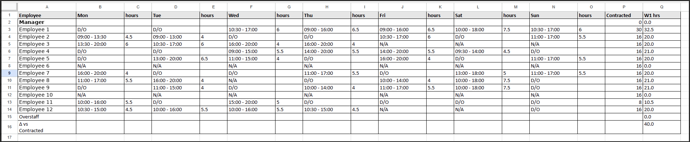
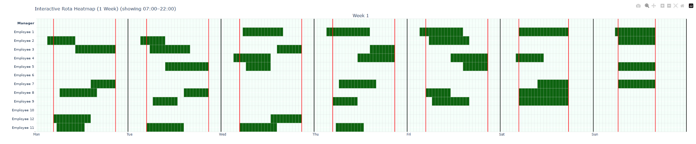

Average weekly labour saving
Calculated from fewer paid hours compared with the branch’s original rotas.
Custom built for a medium-sized retail chain with 5–6 locations. The tool creates rotas around the business’s staffing needs and rules, and runs entirely offline on their own computer.
I tested the tool against actual past weekly rotas from one branch. It found schedules that needed fewer paid labour hours while still meeting the branch’s staffing requirements. Those hours translated into an average £111 a week in labour-cost savings.
Calculated from fewer paid hours compared with the branch’s original rotas.
The generated rota cost less in every historical week tested at that branch.
Each rota met the branch’s staffing rules, including availability, working-hour limits and fixed shifts.
The £111 is a calculated weekly average from the historical comparison at one branch, showing what the lower-hour rotas would have saved. It covers labour costs; any time saved preparing the rota is additional. Savings for another business would be tested against its own rotas.
Putting a rota together means balancing availability, contracted hours and the people needed on each shift. Doing it by hand takes time, and it’s easy to schedule more paid hours than the business needs.
Staff availability and time off
Contracted and maximum working hours
Minimum staffing throughout the day
Keyholders, opening staff and fixed shifts
Keeping staffing costs under control
The manager enters the team’s details and staffing needs, then lets the tool put the rota together. Click any screenshot for a closer look. Staff names have been replaced with anonymous labels.
Enter contracted hours, maximum hours and important roles such as keyholders and opening staff.
Mark when each employee can and cannot work, including unavailable days and limited hours.
Tell the tool how many people the business needs at different times throughout each day.
Keep fixed shifts in place while the rest of the rota is built around them. Use availability to account for time off.
Check the details and click Generate rota. The tool puts the shifts together for the manager to review before sharing with the team.
Check the shifts in a spreadsheet or see the whole week at a glance. The screenshots below show what the tool produces.

Enlarge screenshot ↗See each person’s shifts, days off and total weekly hours alongside their contracted hours.

Enlarge screenshot ↗See who’s working when and where shifts overlap, without reading through every row of the rota.
This tool was built specifically for the retail chain’s way of working. Yours would be built around your business: the people you employ, the hours you open and the rules your rota needs to follow.
It all runs on your own computer, entirely offline. Your staff data stays with you, and you don’t need an internet connection to create a rota.


{kind=link}
{kind=link}